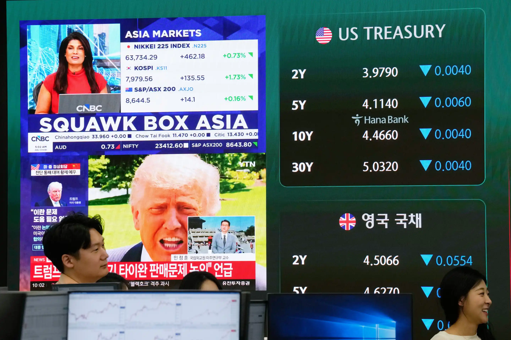

Monday, June 29, 2026
Asia markets index of Japan, South Korea and Australia is seen on a screen at the foreign exchange dealing room of the Hana Bank headquarters in Seoul, South Korea, Thursday, May 14, 2026.


HONG KONG — Asian equities were neutral on Thursday and Chinese stocks fell after Wall Street set fresh records, with investors looking for clues from U.S. President Donald Trump’s encounter with Chinese leader Xi Jinping in Beijing.
Analysts said that Trump and Xi met at the Great Hall of the People and discussed U.S.-China ties and Taiwan, but did not expect any substantial advances.
U.S. futures were slightly higher.
Tokyo’s Nikkei 225 index dropped 1% to 62,654.05 after briefly touching another all-time intraday high above 63,700, bolstered by strong corporate results. South Korea’s Kospi finished 1.8% higher at a new record of 7,981.41, driven by technology-related stocks on the artificial intelligence boom.
The Shanghai Composite index declined 1.5% to 4,177.92. Hong Kong’s Hang Seng added 0.1% to 26,426.06.
Australia’s S&P/ASX 200 was 0.1% higher at 8,640.70.
Taiwan’s Taiex rose 0.9% while India’s Sensex soared 1%.
Oil prices were up with no end in sight to the Iran war after more than two months. U.S. officials have claimed Beijing may leverage its tight economic links with Tehran to pressure Iran to reopen the Strait of Hormuz, which had led some to hope the Trump-Xi meeting might result in some outcomes.
Brent crude, the benchmark for international prices, rose 0.3 percent to $105.95 a barrel. Before the war in Iran started late February it was around $70 a barrel. That came after the International Energy Agency reported Wednesday that supply losses from the strait were “depleting global oil inventories at a record pace.”
Benchmark U.S. crude rose 0.4%, to $101.44 a barrel.
Investors are also keen to hear about China importing powerful H200 processors from Nvidia, after Nvidia CEO Jensen Huang was confirmed as part of Trump’s trip to China, with other top executives including Tesla’s Elon Musk and Apple’s Tim Cook.
Technology stocks led Wall Street higher Wednesday. The benchmark S&P 500 rose 0.6% to 7,444.25, hitting yet another all-time high. The Dow Jones Industrial Average fell 0.1% to 49,693.20. The technology-heavy Nasdaq composite gained 1.2% to 26,402.34, also a record.
Elsewhere, the yield on the U.S. 10-year Treasury dropped to 4.46% from 4.47% but is well above the level of roughly 3.97% seen before the start of the Iran war.
Wholesale prices in the U.S. jumped in April, a study Wednesday showed, as the Iran war-spurred energy shock took hold. On Wednesday, the U.S. Senate also confirmed Trump candidate Kevin Warsh to head the Federal Reserve. He would take over from Jerome Powell, whom Trump has regularly blasted for not cutting rates quicker or deeper
The U.S. dollar was up at 157.92 Japanese yen from 157.86 yen. The euro was flat at $1.1711.